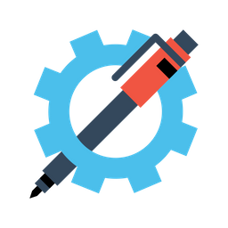

CNC Server client v3.0-beta1
Basic
Advanced
Settings
Diagnostics
Tools:
Loading tool set...
General
Unlock Motors
Zero
Scratch API / Turtle Control
↰
↑
↟
↱
➜
Z/Servo Control
Bypass buffer
Select an SVG file:
Plot Selected File
Force Ready State
CANCEL
SETTINGS
Composite Functions
Run Diag Test
Draw Ruler
Current Status
Live Status
Buffer
Running:
false
Paused:
false
Items:
0
Pause Buffer
Resume Buffer
Clear Buffer